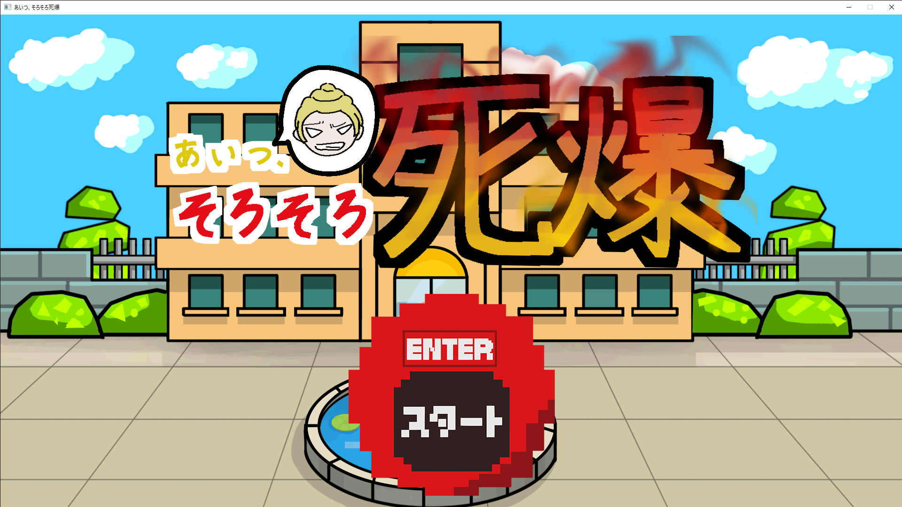
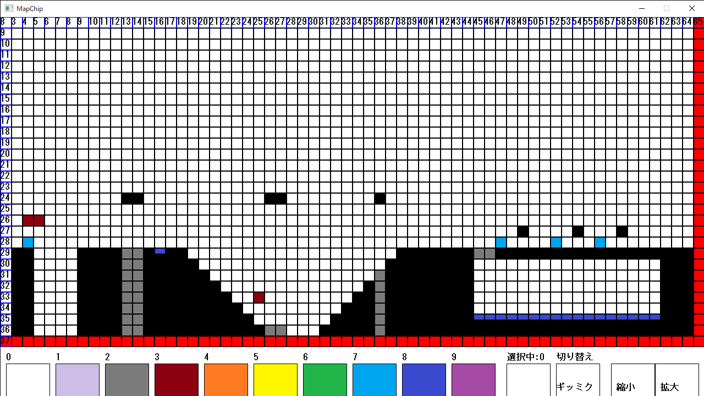
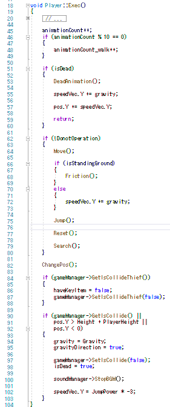

あいつそろそろ死爆
ゲームの概要
いじめられてた子供が倫理観の外れた、いじめっ子を倒しに行く2D横スクロールアクションゲームです。
ステージには数々のギミックが用意されていて、主人公は手に入れた特殊能力「メビウス」の力を利用し、
ボスであるいじめっ子をしばきに行きます。
開発環境
DXライブラリ ver 3.22a
Visual Studio 2019

工夫面
マップチップを作成するための外部ツールを作成しました。
ペイントツールのような感覚で使用でき、画面上に読み込んだ画像を描画することでわかりやすいツールにしました。
リポURL

工夫面
キャラの動きにリアルさを求めつつも、死にゲーだったためにキャラが滑って扱いにくさを出しました。